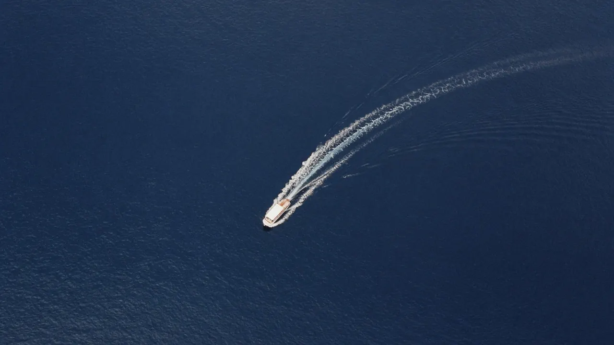
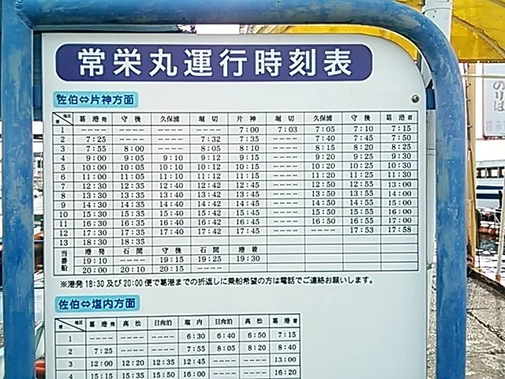
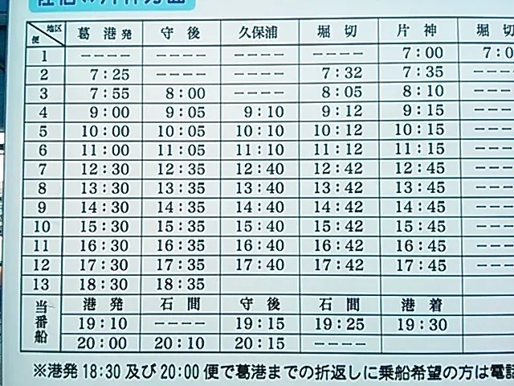
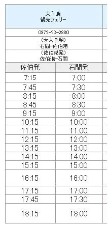
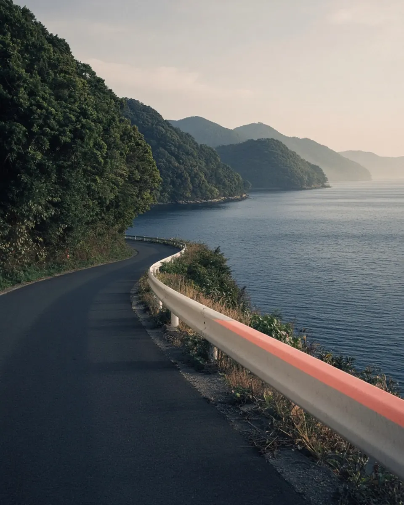
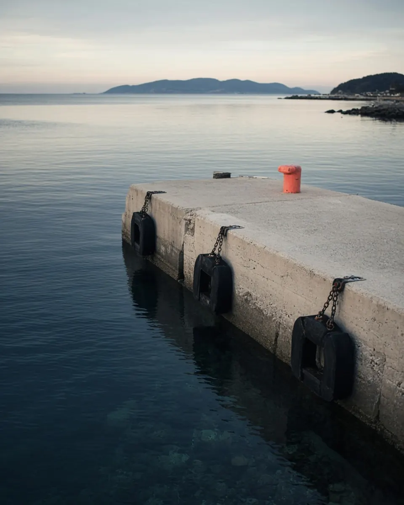

アクセス
海をわたって、
島へ。
佐伯港（葛港）から船で。歩きならマリンバス、車ならフェリーです。
〒876-0007 大分県佐伯市久保浦877（大入島）
050-5052-1587
駐車場 · あり
来かたを選ぶ
海岸線：国土数値情報（行政区域データ、国土交通省）を加工して作成。航路・乗り場・宿の位置は目安です（要確認）。
- 01
葛港（佐伯港）へ
JR佐伯駅から港の乗り場へ（所要時間は要確認）。
- 02
マリンバスに乗る
人だけが乗れる渡し船です（常栄丸）。
- 03
久保浦で下船
時刻表の「久保浦」の便を確認してください。
- 04
宿まで約30m
船を降りてすぐです。
- 01
葛港のフェリー乗り場へ
佐伯市内から車で港へ。
- 02
大入島観光フェリーに乗船
車ごと島へわたります。運賃は要確認。
- 03
島で下船
フェリーの島側の乗り場に着きます。
- 04
車で約10分
宿に駐車場があります。
時刻表
船の時間を、
確かめる。
下の写真は当館が2016年に撮影した時刻表です。最新の時刻は運航会社または当館にご確認ください。



送迎
遠くからでも、
港まで。
ご宿泊のお客さま向けの送迎は、通常のタクシー料金のおよそ半額です。下の距離は葛港からのものです。
通常のタクシー料金のおよそ半額。大きな荷物の方、土地に不慣れな方に。長距離では途中の観光案内もできます。


イメージ方角と距離の目安（道のりの距離）
ご案内
住所
〒876-0007 大分県佐伯市久保浦877（大入島）
〒876-0007 大分県佐伯市久保浦877
電話
050-5052-1587
予約専用・AI留守番電話

イメージ